ofTutorials - Chapter 1 - Getting Started
업데이트! 새로운 프로젝트 생성기: As of openFrameworks 0072 we have a new tool called projectGenerator to create new openFrameworks projects, including addons. In previous versions, creating a new openFrameworks project involved duplicating an existing example app and adding the addons by hand as described in the tutorial below. With the project generator project creation is faster and less error-prone. We highly recommend it. Check it out now!
이 챕터에서는 프로젝트를 생성 및 실행윈도우 크기를 지정, 기본 도형을 그리는 등의 오픈프레임웍스를 처음 시작하는 기초적인 단계들을 다룹니다. 하지만 먼저 …
1. Your First look inside oF
여기서는, 여러분이 오픈프레임웍스를 다운및 셋업가이드를 따라했다고 가정합니다. 우선 여러분이 해야할 일은 압축된 오픈프레임웍스를 여러분이 접근하기 쉬운 폴더에 압축을 푸는 것입니다. 개인적으로, 저는 폴더를 내문서에 위치시키고 사이드바에 바로가기를 만들어둡니다. 이렇게 말이죠 :
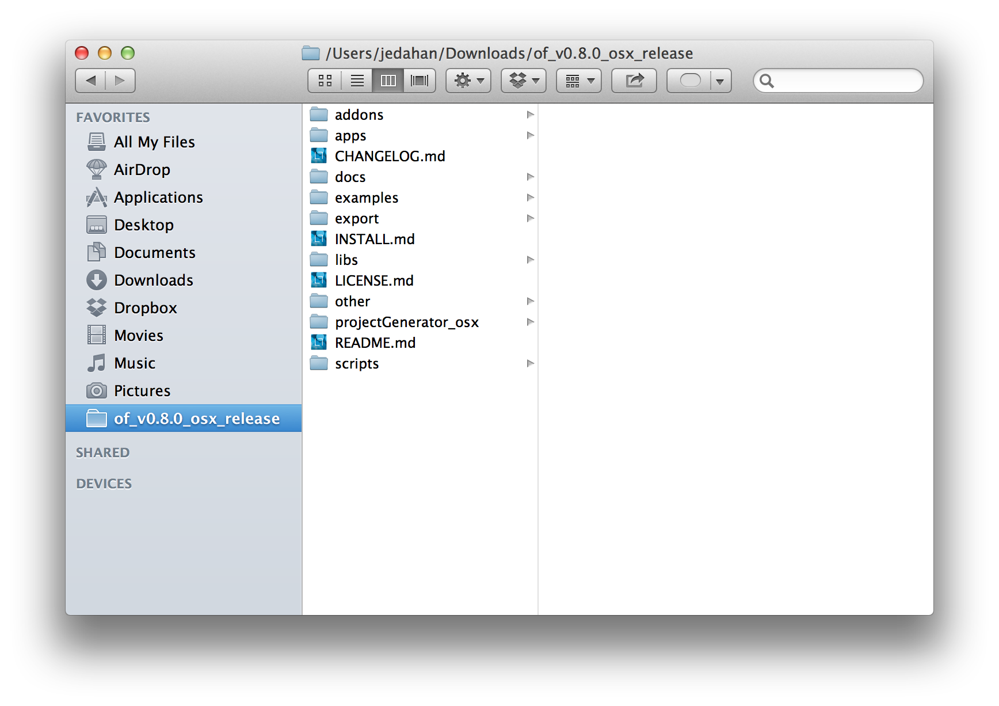
어디에 위치해두건, 폴더를 열어보면, 아래 같은 폴더가 보일 것입니다:
그렇다면, 이 폴더들은 무엇일까요?
- addons
-
오픈프레임웍스 "core"는 가장 핵심적인 기능들만 담겨있습니다. addon 폴더내의 것들은 어플리케이션 조각들로 추가될 수 있습니다. 이렇게 포함 되는 것들은 XML파일을 읽는다던가, 3D 모델을 불러오거나, 또는 컴퓨터 비전 라이브러리인 openCV같은것들입니다.
- apps
-
이 폴더는 여러분이 만든 어플리케이션이 저장될 곳입니다. 또한 여러분이 주로 작업하는 곳이죠. "apps"폴더내에 "myApps"라는 폴더가 있는걸 보실수 있습니다.
- examples
-
이 폴더는 예제 어플리케이션들이 담겨있으며, 오픈프레임웍스로 무엇을 할수 있는지 살펴볼 수 있습니다.
- libs
-
이 폴더는 오픈프레임웍스가 ofCore로 사용하는 라이프러리들이 담겨있습니다.
2. Take a Tour of the Examples
"examples"폴더는 오픈프레임웍스로 할수 있는 것들을 보여주는 프로젝트들이 담겨있습니다. 여러분이 직접 앱을 만들기 전에 이 예제들을 살펴보는것은 좋은 생각입니다. 이 과정은 여러분이 사용하는 IDE에 따라 약간 다릅니다.
2.1. XCode
examples/graphicsExample폴더로 이동하여 "graphicsExample.xcodeproj"파일을 더블릭합니다.
아마 아래와 같은 윈도우가 보일것입니다:
Important |
메뉴 바에서 어떤 버전을 사용하고 있는지 살펴보세요: Xcode > About Xcode에서 보실수 있습니다. 사용하고 있는 Xcode가 4.0 이하 버전이라면, 윈도우는 상당히 다를것이지만, 혼란스러워하지 마세요 — 대응되는 인터페이스 기능들은 충분히 쉽게 찾을 수 있습니다. |
화면의 좌측 상단에 커다란 "Run" 버튼이 있을것입니다. Xcode 3에서는, "Build & Run"이라고 불렸었습니다. 이 버튼을 눌러 현재 활성화된 타겟으로 실행할 수 있습니다. 하지만 여러분도 곧 알아차리시겠지만, 기본적으로, 활성화된 타겟은 openFrameworks라이브러리입니다. 이럴 경우 말그대로, 아무일도 발생하지 않습니다. 우리가 원하는것은 "graphicsExample"프로그램을 실행하는 것이죠. 따라서 아래와 같이 보인다면:
클릭하여 아래로 그래그하면 이와같이 보입니다:
이제 "Run"버튼을 클릭하면, 이 화면이 보일겁니다:
원과 오렌지색 원은 분명히 크기가 일정하게 변할것이고, 사각형들은 랜덤하게 그려질것입니다. 위에 위치한 빨간색 바는 페이드아웃되고, 선들은 부드럽게 변합니다. ESC나 Apple+Q를 눌러 프로그램을 종료합니다.
Warning |
컴파일 문제해결 If you are getting errors, try switching the "Base SDK" setting to 10.6 만약 에러가 발생하면, "Base SDK"세팅을 10.6으로 바꿔보십시오
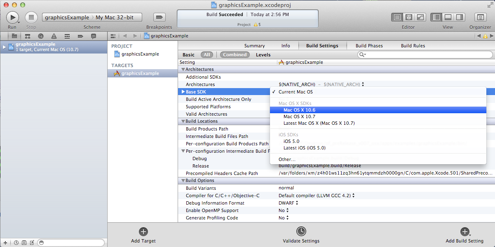 모든 프로젝트마다 이런 과정을 거쳐야 할것 이므로, 익숙해지셔야 할겁니다 :) |
이제 다른 예제들을 열어서 실행해보세요.
2.2. Code::Blocks
Code::Blocks를 여세요. 기본 화면은 아래와 같습니다:
"Open an existing project"클릭하거나 또는 Ctrl+O를 사용하여 파일브라우저를 엽니다. 이제 오픈프레임웍스 예제 디렉토리로 이동하여 graphics/graphicsExample폴더로 들어갑니다. 화면 뷰에서 "All files ."가 선택되었는지 꼭 확인하세요. Code::Blocks프로젝트인 "graphicsExample.workspace" (graphicsExample.cbp가 아닙니다)를 여세요.
workspace가 있어야 컴파일러가 관련된 라이브러리를 찾을 수 있습니다. 만약 workspace가 불려지지 않으면, 개발환경은 최종 실행파일을 생성하기 위한 중요한 정보가 부족하게 됩니다. workspace가 성공적으로 볼러와지면,
상단의 작은 기어 버튼을 클릭하거나 Ctrl+F9를 눌러 프로젝트를 빌드(컴파일)할 수 있습니다. 작은 녹색 삼각형버튼을 누르거나 Ctrl+F10을 눌러 프로젝트를 실행할 수 있습니다. F9를 눌러 이 두가지 과정을 조합할 수 있습니다. 결과는 아래와 같이 보일것입니다:
원과 오렌지색 원은 분명히 크기가 일정하게 변할것이고, 사각형들은 랜덤하게 그려질것입니다. 위에 위치한 빨간색 바는 페이드아웃되고, 선들은 부드럽게 변합니다. ESC나 Apple+Q를 눌러 프로그램을 종료합니다.
2.3. command-line
사실 오픈프레임웍스 예제를 빌드하기 위해 꼭 IDE가 필요한것은 아닙니다. 모든 도구는 커맨드라인 모드에서도 실행할 수 있기 때문이죠. 예제를 빌드하기 위해 터미널 윈도우를 열고, 오픈프레임웍스가 있는 폴더로 이동합니다. 그곳에서 examples 디렉토리로 들어갑니다. 예를 들어 "graphics Example":
|
코드를 빌드하고 실행하기 위해 아래의 명령을 사용합니다.
|
명령이 실행되면 마침내 위에서 보았던 똑같은 화면이 보여질 것입니다.
원과 오렌지색 원은 분명히 크기가 일정하게 변할것이고, 사각형들은 랜덤하게 그려질것입니다. 위에 위치한 빨간색 바는 페이드아웃되고, 선들은 부드럽게 변합니다. ESC나 Apple+Q를 눌러 프로그램을 종료합니다.
만약 아래 명령을 사용하면, 모든 빌드는 제거되고 디렉토리가 깔끔하게 비워질 것입니다.
|
이는 코드를 변경하고, 새로 빌드하는 것이 예전에 컴파일됐던 파트들을 다시 사용하지 않게 할 때에 유용합니다.
3. Creating Your First Project
Note |
Code::Blocks note 이 섹션은 예시로 드는 IDE로 XCode에 촛점이 맞춰져있습니다. 여기에서 제공되는 일반적인 정보들은 Code::Blocks에도 동일하게 적용됩니다. Code::Blocks프로젝트 파일은 ".xcodeproj"대신 .workspace"확장자를 사용합니다. IDE 에 관한 질문이 있으시다면 Code::Blocks 매뉴얼을 살펴봐주시기 바랍니다. |
소개부분에서 언급했듯이, 오픈프레임웍스는 여러분이 선택한 IDE의 지루한 C++ project 세팅을 담당합니다. 하지만 Flash나 Processing 프로그램과는 다르게, 프로젝트를 생성하는 "파일 > 새 파일"은 없습니다. 대신에 새 프로젝트를 생성하기 위해 projectGenerator를 사용하실 수 있습니다. 예전(openFrameworks 0072 이전)에는 추천되는 방법은 예제프로젝트중 하나를 복제하는 것이었습니다.
Important |
좀더 설명하자면, 예제파일을 복제한다는 말은 어떠한 예제 프로젝트라 하더라도 절대 편집하면 안되고, 여러분의 앱을 예제 폴더에 두지 말라는 의미입니다. 이것들은 여러분의 앱을 위해 시작지점으로 제공되도록 위치하고 있으므로, 원시적으로 유지하시는것이 좋습니다. 앞으로 이것의 중요성을 알게 될것입니다.. projectGenerator를 사용하시는게 좋습니다. |
단순하게 보시는것과 같이, 초보자들에게는 엄청 어지러울수 있습니다. 따라서 우선 용어부터 정리해보죠.
apps폴더를 열어보면, _myApps_폴더를 볼 수 있습니다. 이 폴더를 *작업공간*이라고 부릅시다.
이제 myApps 작업공간을 열어보면, emptyExample 폴더가 보입니다. 이것을 *프로젝트*라고 부르겠습니다. 각 프로젝트에는 다른 파일들과 함께 (사용하고 있는 IDE에 따라)".xcodeproj" 또는 ".workspace"파일과, "src"폴더가 있습니다. *프로젝트*는 반드시 *작업공간*내에 위치해야 하며, 하나의 어플리케이션으로 컴파일 될 수 있습니다.
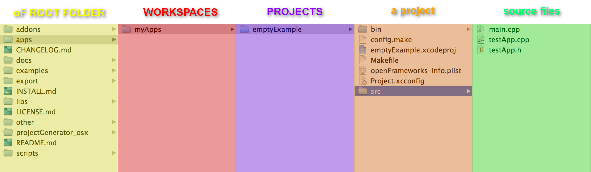
자 우리는 프로젝트*를 만들려고 합니다만, 모든 프로젝트는 *작업공간 내에서 살아갑니다. 따라서 편리하가게 myApps 작업공간을 사용해봅시다. 물론 원한다면 여러분이 원하는 작업공간을 사용할 수 있습니다. 하지만 중요한것은 "apps"내에 바로 위치해야 한다는 점입니다. 예를들어 : 하나의 작업공간 내에 다른 작업공간을 가질 수 없습니다.
Note |
deprecated instructions on the old project creation way First we will duplicate (NOT rename) the entire "emptyExample" folder. On a Mac, you can literally right-click on the emptyExample folder, and click Duplicate. So the result should look like this: 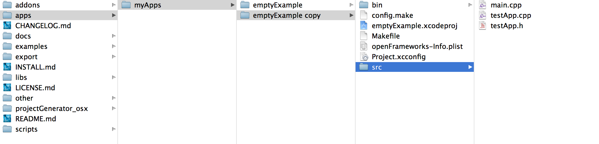 Next, we can rename the duplicate project folder from "emptyExample Copy" to "myFirstProject". 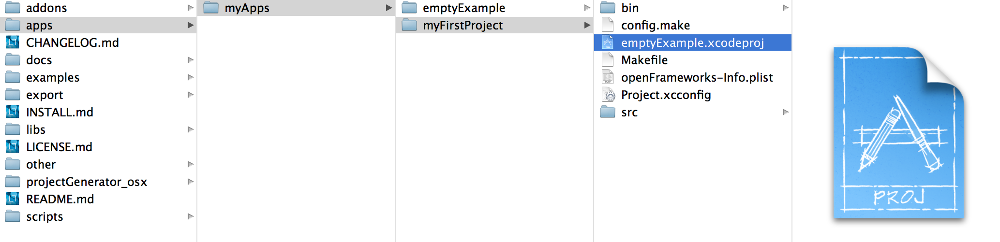 |
The super important thing here is that your XCode or Code::Blocks project file is exactly 3 folders "below" the root folder (refer to colorful diagram above). So, whenever you make a new project, or if you are suddenly getting thousands of errors for no apparent reason, you should always double check that your XCode or Code::Blocks project file is in the correct place. 여기서 매우 중요한 사실은 여러분 Xcode나 Code::Blocks 프로젝트 파일은 root폴더로부터 정확히 3단계를 유지하고 있다는 점입니다 (위의 컬러 다이어그램을 참고하세요).
이러한 이유는 'lib'폴더와 관계가 있습니다. 앞에서 언급했지만 오픈프레임웍스는 다양한 다른 라이브러리들을 묶는 "접착제" 역할을 합니다. 이러한 라이브러리들은 'lib'디렉토리에 위치해 있습니다. 또한 우리는 이러한 라이브러리가 어디에 있는지를 찾아서, 그것들을 함께 묶는작업이 IDE의 주 역할이라는것도 알았죠. 따라서 IDE가 여러분의 프로그램을 컴파일하려고 할때, IDE는 라이브러리를 찾기 위해 "../../../lib"를 살펴봅니다. 다르게 말하면: ".xcodeproj파일로부터 상대적인 경로로 3번 상위로 올라가서 lib폴더를 살펴보라" 라는 의미입니다. 에를들어 아무 오픈프레임웍스 프로젝트의 세팅부분을 살펴보면, "../../../libs/Freeimage/include" 와 "../../../libs/poco/include" 경로를 찾을 수 있을것입니다. 따라서, 여러분의 .xcodeproj 파일이 of_v0.9.0_osx_release/apps/[작업공간]/[프로젝트] 에만 위치하고 있다면, 문제없이 컴파일할 수 있습니다. 그렇지 않다면, 문제가 발생합니다.
좋습니다! 이제 여러분의 최조의 오픈프레임웍스 프로젝트를 생성했네요. 여러분의 새 Xcode 프로젝트 파일을 더블클릭하고 "emptyExample"이 다겟으로 선택되었는지 확인한다음 "Run"을 클릭하면(또는 Code::Blocks에서 F9를 눌러보면), 아래와 같은 화면이 보일것입니다:
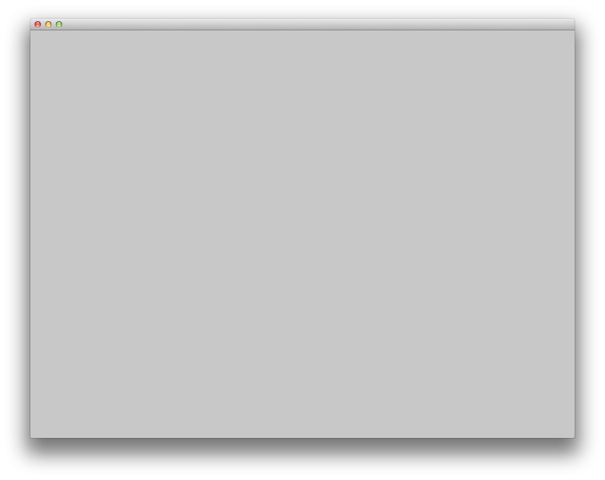
아무것도 없네요! 하지만 이것이 정확히 여러분이 보게 될 화면입니다. 뭐, 아직 아주 흥미롭진 않네요, 그래도 잘하고 있는겁니다.
ESC나 App+Q를 눌러 프로그램을 종료하세요
Warning |
Renaming your Project in XCode 파일명을 "emptyExample.xcodeproj"를 "myFirstProject.xcodeproj"로 변경하려고 시도할수도 있습니다. 만약 Xcode 4 이전의 버젼이라면 가능하지만, Xcode 4에서는 문제가 발생합니다. 따라서 대신에, 프로젝트를 XCode에서 열고, 아래에 보이는 것처럼 좌층 상단의 "emptyExample" 제목을 누르십시오: 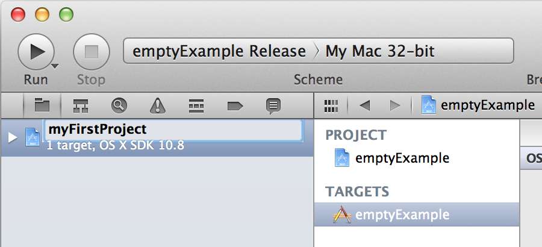 이름을 변경하면, 다이얼로그 박스로 많은것들 역시 이름을 변경할것이냐고 물어볼것입니다. "Rename"을 누르세요. 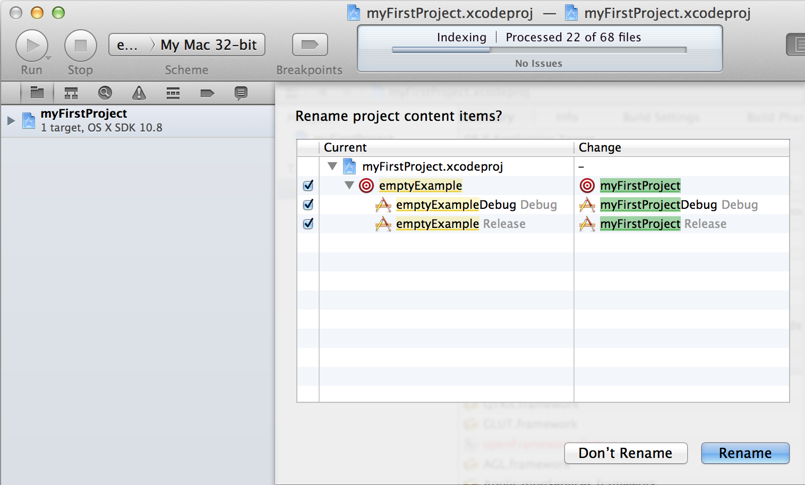 쨔잔! |
XCode의 "Run"버튼을 클릭할 때, 실제로 뒤에서 벌어지는 일을 설명하자면, 여러분의 코드는 실행가능한 파일로 컴파일되어 "bin"디렉토리에 위치하게 됩니다. 그리고 나서 실행파일을 더블클릭하여 실행한것처럼 해당 어플리케이션이 실행됩니다.자, "myApps/MyFirstApplication/bin"폴더를 살펴보면, 어플리케이션 아이콘이 보일것입니다. 이것이 여러분의 어플리케이션입니다! 더블클릭해보면, 똑같은 회색 윈도우가 보일 것입니다. 이제 이 어플리케이션을 (맥을 사용하는) 다른 친구에게 보낼 수 있습니다. 그리고 이 멋진 회색 윈도우 프로그램을 실행 할수도 있죠!
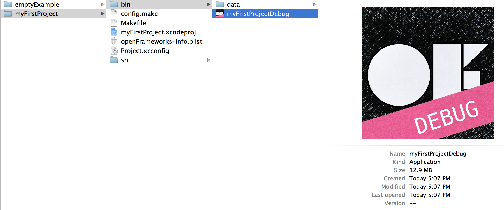
4. Writing Code
좋습니다, 이제 프로젝트를 어떻게 생성하는지 알았으니, 프로젝트에서 코드를 작성할 시간입니다. 앞으로의 몇 섹션에서는 오픈프레임웍스 어플리케이션의 구조와 간단한 draw, setup 팜수를 소개할 것입니다.
4.1. testApp.cpp
자 마침내 코드를 살펴보기 시작할 시간입니다. 우선 해야할 일은 Xcode에서 프로젝트를 여는것입니다. 여러분이 앞 섹션에의 "myApps" 작업공간에 있는 "myFirstProject"로 작업한다고 가정하고 진행하겠습니다. 열어서, 네비게이터 뷰(XCode의 좌측 끝 패널)의 작은 삼각형을 클릭해보세요. 아래와 같이요:
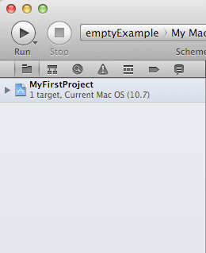
-
Click the disclosure triangle next to "MyFirstProject"
-
Click the disclosure triangle next to "src"
-
Click on testApp.cpp
testApp.cpp는 앞으로 볼 몇 튜토리얼에서 여러분이 친해져야할 녀석입니다. *편집기 윈도우*에는, 이렇게 시작하는 뭔가가 보일겁니다:
|
자, 뭐가 어떻게 되고 있는거죠?
다양한 측면에서, testApp.cpp는 소개란에서 작성했던 hello.cpp와 같습니다. 이 파일은 `C++`소스코드를 담는 평문 텍스트 파일입니다. 다른점이 있다면 우리는 이것을 IDE를 통해 편집하고 있으므로, 보시다시피 아주 훌륭하게 문법 강조(syntax highlighting)가 적용되어 있어 코드를 쉽게 이해할 수 있습니다. 또한 역시 컴파일 및 실행을 쉽게 할 수 있죠.
아주 기초적인 레벨에서, 여러분이 보고 계시는것은 많은 빈 함수들입니다. 함수는 보다 큰 프로그램을 만들어가는 명령의 집합입니다. 위의 작은 코드조각들을 보면, 4개의 함수가 있습니다: setup, update, darw 그리고 keyPressed입니다. 각 함수는 중괄호(curly brackets {})로 감싸져 있습니다. 중괄호 내에 주로 작성되는 내용들은 명령들(변수에 값을 할당하거나, 반복(loop)들, 그리고 다른 함수의 호출 등등)이며, 이것들이 함수를 완성합니다.
If you refer back to the Q&A "What is a software framework?" in the introduction, the film production company analogy is particularly useful at this point. What you are looking at in testApp.cpp is how openFrameworks has provided all of the infrastructure and logistical details. Now it’s your job to define what happens. You do this by putting code into the functions in testApp.cpp
이러한 함수들은 프로그램이 실행되는동안 다른 지점에서 오픈프레임웍스에 의해 호출됩니다. 이중 몇개를 좀더 살펴봅시다.
- setup
-
이 함수는 프로그램 윈도우가 열리기 전에 가장 처음에 호출(중괄호 내에 작성된 모든 코드들이) 됩니다. 예를 들어 윈도우의 크기를 지정하고 싶다고 해봅시다. 아마도 여러분은 윈도우가 실제로 열리기전에 이러한 작업이 수행되길 원하기 때문에, setup이 바로 적절한 곳입니다.
- update, draw
-
setup함수가 실행된 이후, update와 draw함수가 시작되어 프로그램이 종료될때까지 반복됩니다. 즉 setup()이 동작한 이후, update()가 돌고, draw()가 돌고, update()가 돌고, draw()가 돌고.. 이런식입니다. 그리고 기본적으로, 이러한 과정들은 여러분의 컴퓨터가 다룰 수 After the setup function runs, the update and draw functions begin a loop that continues until your program ends. So, after setup() runs, update() runs, then draw(), then update(), then draw(), etc. and by default, this happens as fast as your computer can handle. update() is typically used for updating the state of your program (i.e.: changing the value of variables), while draw() is used to actually draw things into your window.
- keyPressed, keyReleased, mouseMoved, mouseDragged, mousePressed, mouseReleased, windowResized, gotMessage, dragEvent
-
Unlike the previous three functions, these functions are called only when a user does something. Can you guess what?
But enough with the reading. Let’s see these things in action.
4.2. Making a Mark
We will start by drawing a simple circle in our gray window using the ofCircle function. Type ofCircle(200, 200, 60); on the blank line inside the draw() function so that your draw function look like this:
|
Note |
Notice the semicolon at the end of the line. All function calls must end with a semicolon. In addition, function names are always case sensitive, so OfSetColor will not work, nor OFsetcolor, etc. only ofSetColor. |
Now run your program. You should see something like:
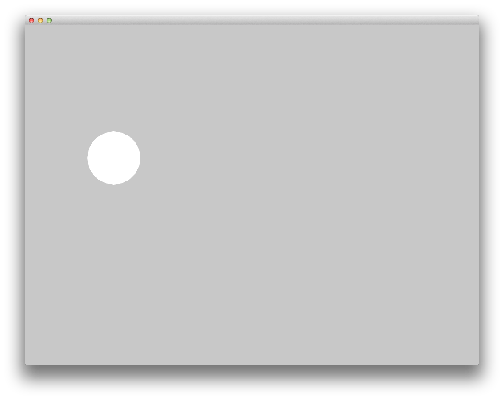
Congratulations! You just made something appear on the screen! It’s all downhill from here.
But what did we just do?
ofCircle is a function that comes with openFrameworks (hence the of prefix). You can invoke the ofCircle function inside your draw function as many times as you’d like. The numbers inside of the parenthesis after ofCircle are called arguments. They determine exactly what the function does. They answer the questions: "okay, you want to draw a circle, but where? and how big?" Functions can take any number of arguments, always separated by commas, but ofCircle takes 3: an x coordinate, a y coordinate, and a radius. There are a few things you need to know to make sense of these arguments:
-
All measurements in openFrameworks are in pixels. By saying that our circle has a radius of 60, that means that it will take up PI*602 pixels total.
-
This may seem obvious, but the coordinates refer to the center of the circle. Other shapes (such as rectangles) use the upper left corner.
-
The "origin" of the coordinate system is in the upper left of the window. So, our circle appears 200 pixels from the left side of the screen, and 300 pixels from the top.
Note |
The order of the arguments is important. The first argument to ofCircle will always mean "x coordinate" and the third will always mean "radius". |
Note |
There are some functions (such as ofFill, which simply tells oF to fill shapes that are drawn) that have 0 arguments, but you still have to put parenthesis after them. |
If you hadn’t just read about it here, you could have found information about ofCircle on the openFrameworks documentation page, which you will be using more as we move on.
4.3. Adding some Color
Your circle is great, but kind of boring. What if we want to introduce some color to our application? To do that, we need the the ofSetColor function. Try adding ofSetColor(255, 0, 255); right above the ofCircle line, so that your draw function looks like this:
|
Now try running your application.
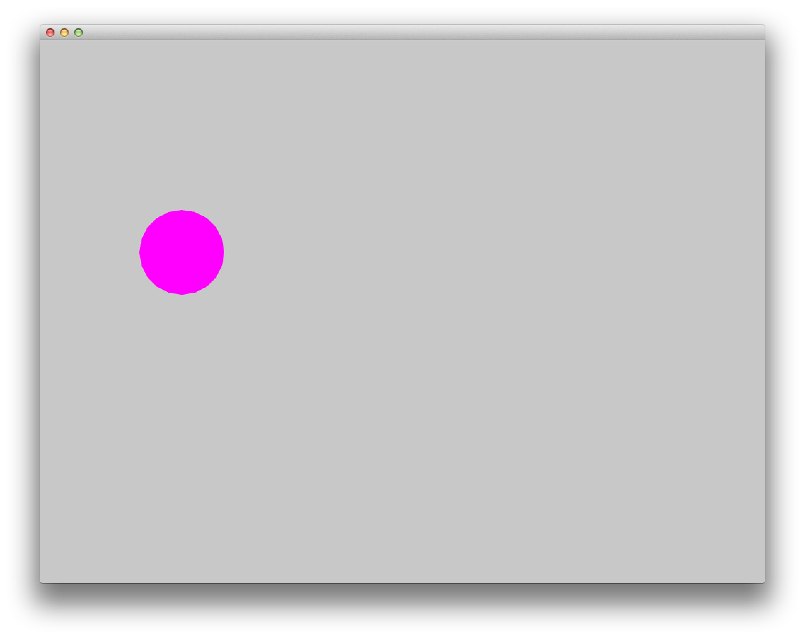
Similar to ofCircle, the ofSetColor function takes 3 arguments, but the numbers have very different meanings. If you look at the documentation for ofSetColor, you’ll notice that they arguments actually represent the red, green, and blue values for the color that you want to use, on a scale of 0-255. The red, green and blue make up the RGB color model or color space. So when we typed ofSetColor(255, 0, 255);, we were saying "until further notice, draw everything with 100% red, 0 green, and 100% blue."
Tip |
Try changing the values to get different color variations. |
This last point is important: when we call "ofSetColor", it’s like picking a crayon out of a box. Everything that gets drawn after that (below that line of code) will be drawn in that color until we call ofSetColor again. So if we want to draw another circle on the screen, we could simply call the ofCircle function again:
|
But if we wanted that circle to be a different color, we would have to call ofSetColor again:
|
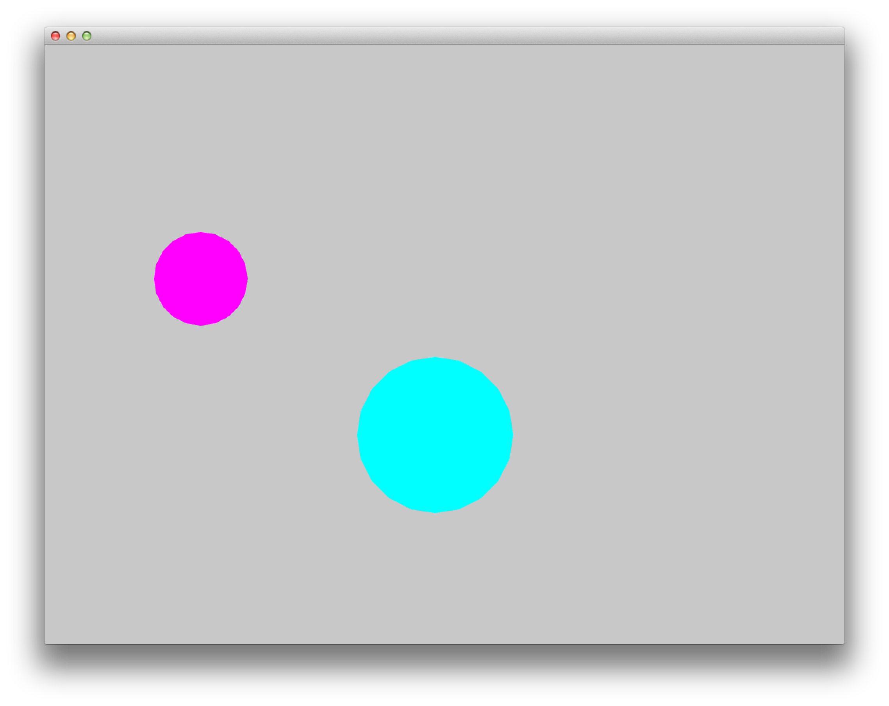
4.4. All The Shapes You Can Handle
Of course, oF can draw more than circles.
-
ofRect draws a rectangle. arguments are (x, y, width, height)
-
ofTriangle draws a triangle. arguments are the coordinates of the three points: (x1, y1, x2, y2, x3, y3)
-
ofLine draws a line. arguments are the start coordinate and the end coordinate (x1, y1, x2, y2)
-
ofEllipse arguments are: (x, y, width, height)
-
ofCurve Draws a curve from point (x1, y1) to point (x2, y2). The curve is shaped by the two control points (x0,y0) and (x3,y3).
Note |
Control points can be tricky. If you’ve used the pen tool in photoshop or illustrator, you probably understand them. If not, check out this tutorial. It’s about ActionScript, but it gives a great overview of the concept of curves and control points. |
Tip |
Try making 3 different projects in your "MyFirstWorkspace" workspace. In each one, draw a different shape in a different location using a different color. |
4.5. Adding Movement
Drawing static shapes is great, but what if we want our shapes to move around the screen?
We mentioned earlier that the draw() function is called repeatedly after the program is started. This is very important because it is how we achieve animation in openFrameworks. It might be a little unintuitive if you are used to Flash or even something like stop-frame animation, where you can add something to a "stage" and then re-position it as needed. This is not how openFrameworks (or most computer animation) works. Actually, openFrameworks is more like traditional (we’re talking old-school Disney/Bambi) animation, where we must redraw the frame completely every single "frame". In the parlance of openFrameworks, every time the draw() function is called is one "frame". So, in actuality, when you run the program above and see your purple circle, what you are actually looking at is the circle being drawn, then cleared (a single frame), and then drawn, then cleared, repeatedly. It’s just happening so fast that it appears to stay where it is.
In the example above, when we draw our circle, we use two numbers to tell the ofCircle function where to draw the circle within the window. So it follows that, if we want the circle to appear to move, we need to change these numbers over time. Perhaps the first time draw() happens, the circle is drawn at (200, 300), but in the next time, we want it to be one pixel to the right (201, 300), and then another pixel to the right (202, 300), and so on.
In C++, and in programming in general, whenever you have a value that you want to change, you create a "variable". Variables come in different shapes and sizes depending on what they represent, such as decimal numbers, whole numbers, a letter, or a bunch of letters. In this case, we want to create variables that can stand in for coordinates in our ofCircle function, so we will use 2 ints.
Put this at the top of your testApp.cpp, right under the #include line, so that your file starts like this:
|
In those 2 new lines of code, we "declared" 2 new variables: one called myCircleX and one called myCircleY. You could actually name them whatever you want (within reason), but it’s a good idea to name them something that is related to how they will be used. We also said that these variables will be used to hold whole-number integer values, or ints. Declaring a variable is an important and necessary step. It’s like telling your application "okay, I’m going to need to store a number that might change."
The next thing we need to do is give those variables a starting value. We know that the endgame here is to have these variables change over time. But before we can change them, we need to give them an initial value. In other words, before our circle starts moving, where will it appear?
In a previous section, we learned that the setup() function gets called once when the application launches, and then never called again. This sounds like it could be useful for giving our variables some initial values. So in your setup() function, add the following lines.
|
Perfect! So, to recap, we now have 2 variables, myCircleX, and myCircleY, and we have just "initialized" them, or populated with an "initial" value. Notice that, just like any mathematical equation, we use the equals sign (=) to assign the number 300 to myCircleX. In C++ parlance, the equals sign is known as the "assignment operator", because it’s used to assign a value to a variable. The "assignment" always flows from right to left; that is, the value that is being assigned is on the right and thing that is receiving the assignment is on the left.
Now we can edit our ofCircle call a bit :
|
Notice that we are still passing 3 arguments to the ofCircle function. But now, instead of the old "hard-coded" (200, 300) values that we can’t change, we are letting the variables that we made stand in.
If you run your app now, you shouldn’t notice any change. That’s because we haven’t gotten around to changing the variables yet. So let’s do it.
Let’s edit our draw function a little so that it looks like this:
|
In this new line, we are using the "assignment operator" again, just like in the setup function. In English, that line would say "take the value of myCircleX plus one, and assign that to myCircleX". In other words, we are incrementing myCircleX by 1. C++ provides a shortcut for the common task of incrementing a variable: myCircleX++; This is extremely common, so let’s actually change our code to use this handy shortcut:
myCircleX = myCircleX + 1;becomes
myCircleX++;If you run your program now, you should see your circle move off the screen to the right! Animation!
There is just one thing we need to fix before moving on to more pressing aesthetic concerns. If you read back through the descriptions of what the update() and draw() functions are supposed to be used for, you’ll notice that the draw function is for drawing (so far, so good), but the update() function is where we are supposed to take care of updating variables. There are some very good reasons for this that we will get into later, but for now, let’s move the line we just wrote to the update function. So, your update and draw functions should look like this:
|
You shouldn’t notice any difference in terms of functionality, but it’s a good habit to get into.
4.6. Framerate
One thing you may notice about your awesome moving circle is that it starts off kind of slow and then speeds away. This is actually caused by the framerate of your application, which is slow at first while the application fires up, but then gets super fast. As mentioned before, framerate refers to the rate at which the draw/update loop executes. Add this little line of code to the bottom of your draw() function to be able to see your framerate in the upper left corner of your window:
ofDrawBitmapString(ofToString(ofGetFrameRate())+"fps", 10, 15);Most likely, it says something very close to 1000fps. That means that your circle is being drawn close to one thousand times per second. If you were to fire up tons of other applications on your computer and start rendering a huge video, you’d notice this framerate drops. The fact is that your application is simply trying to run as fast as it possibly can.
In the interest of having a smoother, more predictable kind of animation, we will lower the framerate to something more reasonable, like 60. In order to do this, we will put a new line into our setup() function.
|
Add that and then run your program. You will notice that the circle moves considerably slower. Using this function is not a guarantee of 60 frames per second, but it is a guarantee that your framerate won’t be any higher than that. And unless you have a really old computer, or your processor is already extremely taxed by some other program, it should have no problem running consistently at 60fps while doing something a simple as drawing a moving circle.
Tip |
SAT word problem #1: If we know that the update loop is happening (at most) 60 times/second, and we are incrementing the x coordinate of the circle by 1 pixel every time update is called, how long will it take for the circle to move 240px? |
Tip |
Too bloody slow It’s true that we now have a good handle on the framerate, but 60px/second turns out to be really slow. To fix this problem, we could increase the framerate, but 60fps is a pretty good framerate. so instead, let’s change the speed of the circle itself: instead of just incrementing the x coordinate by 1 pixel every time, let’s increment it by 4. Using the same "incrementing" shortcut, we can change our update() function like this:
|
4.7. The Pacman Effect
Let’s have one final adventure with our purple circle before saying goodbye. Our application is still a little disappointing because once our circle leaves the screen on the right, it’s gone forever. Let’s fix that problem by making the circle re-appear on the left side after leaving on the right: the Pacman Effect.
Before we write any code, let’s think about what this is going to mean in terms of the variables that we have. In the current state, we have myCircleX acting as the x coordinate for our circle, and it is being incrementing by 1 (or 4, if you followed the tip above) every frame. By default, an openFrameworks window is 1024x768. So, one way we could achieve the Pacman Effect is to reset myCircleX back to 300 once it goes beyond 1024.
How can we do this? We know that we are supposed to do any variable updating in the update() function, so let’s start there. We also know that we only want to reset myCircleX if it has gone above 1024. So for that, we use the if statement.
|
This code says:
-
increment myCircleX by one.
-
test if myCircleX is greater than 1024
-
only if that test turns out to be true, set myCircleX back to 300;
5. Adding Interaction
Now that you are a master of animation, it’s time to get the user involved. For this section, we will be focusing on keyboard and mouse interaction.
So far, we’ve been focusing on 3 functions: setup(), update(), and draw(). For interaction, we will start with 2 of the other functions in your testApp.cpp file:
|
Going back to the producer metaphor can help us understand how these functions work. openFrameworks has done the hard work of setting up your app to know when the user has done some keyboard business. Now, all you have to do is put code into these functions that you want to execute when a particular event occurs:
-
user physically presses down on a key
-
user physically releases the key
This might be a little unintuitive if you are accustomed to thinking about typing a letter as a single action: "I just typed the letter o". But in fact, they are 2 distinct actions, or "events", and eventually you might find it handy to be able to distinguish between them.
Create a new project in "myApps" called "keyboardInteraction". If you need to, go back to "Creating your First Project" to see how.
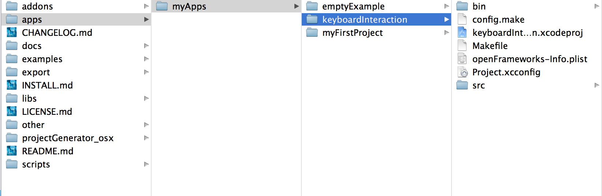
5.1. Introducing, cout!
The easiest way to quickly see how these functions work is to print a message to the console. Remember when we printed "Hello, World!" to the console in the introduction? We did that using a C++ thing called "cout" (pronounced c out). The syntax for using it is a bit weird because it’s not technically a function (it’s actually an object, which we will talk more about in later chapters), but if you can get beyond the syntax, it’s actually very useful for debugging.
But first: you may be asking yourself: how will we see text output? We are dealing with a GUI interface now. Luckily, XCode/Code::Blocks provides a window where we can see anything text that your program outputs (also known as stdout).
So start by going to View→Debug Area→Activate Console, or press apple+shift+C when using XCode. Code::Blocks automatically opens a console window when you press F9 (to build and run your program).
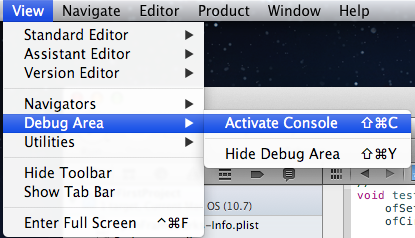
Note |
For XCode 3 users, use the key command Shift-Cmd-R. There’s also a preference in XCode to bring up the console after each launch - Xcode→Preferences→Debugging→On Start Show Console. |
You should see a panel like this appear at the bottom of your XCode window
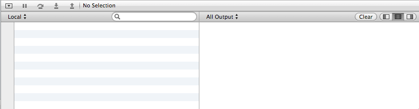
Excellent! Your output will appear in the pane on the right. Now we will add some code to our key functions that will print stuff to the console:
|
As I mentioned before, the syntax for cout is a little strange and, frankly, way beyond the scope of this chapter. In C++ parlance, cout represents the "standard output stream", and without worrying too much about what that means, "stream" is a nice way to think about it. If you look at the line of code within keyPressed, it appears that there is a "stream" of data flowing into the "cout". First we send in the string "keyPressed " down the stream, then we send in a variable: key. Finally, we send endl down the stream. endl simply tells the console to go to the next line.
The key variable represents the key that was pressed or released. More about this in a bit.
Let’s give it a try. Launch your program and type some keys. I will type "qwerty". You should see something like this in the console:
GNU gdb 6.3.50-20050815 (Apple version gdb-1708) (Thu Nov 3 21:59:02 UTC 2011)
Copyright 2004 Free Software Foundation, Inc.
GDB is free software, covered by the GNU General Public License, and you are
welcome to change it and/or distribute copies of it under certain conditions.
Type "show copying" to see the conditions.
There is absolutely no warranty for GDB. Type "show warranty" for details.
This GDB was configured as "x86_64-apple-darwin".tty /dev/ttys002
[Switching to process 92317 thread 0x0]
keyPressed 113
keyReleased 113
keyPressed 119
keyReleased 119
keyPressed 101
keyReleased 101
keyPressed 114
keyReleased 114
keyPressed 116
keyReleased 116
keyPressed 121
keyReleased 121Don’t worry about the crap at the beginning — that’s added by the debugger.
The fact that the key is supplied as an int may seem a bit strange. Perhaps you were expecting a string or a char? In fact, what this number represents is the ASCII code for the key pressed. Check out this table:
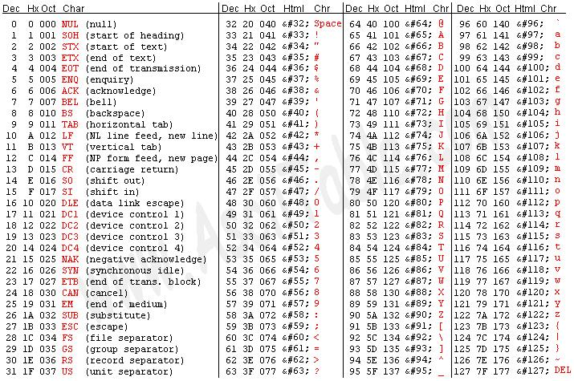
On the right of each column in red, you will see a key on your keyboard. Under the corresponding "Dec" (decimal=base 10) column, you will see the number that you will receive in the key functions.
Tip |
You can actually use something called type casting to turn the int into a char, or letter. Simply put "(char)" before the "key" variable so that your cout statement looks like this:
More about type casting later in this chapter! |
Fantastic. But presumably we want to do more with the key presses than print to the console. Let’s use the keys to move a ball around on the screen.
Start by adding two variables to your testApp and using them to draw a circle, just like we did in the Adding Movement section:
|
In the Adding Movement section, we used variables so that we could have the circle move by itself. The difference this time is that we want the ball to move in response to our keyboard input. This means that we need to modify the values of the variables depending on which keys are pressed rather than incrementing it automatically every frame. So it follows that we need to change the value of myCircleX and myCircleY in keyPressed() (or keyReleased() — it’s up to you!) instead of update().
Let’s use a typical computer game keyboard scheme: say we want the ball to move up when we press w, to the left when we press a, down when we press s, and right when we press d. We could start by looking up the ASCII values and finding that the values are 119, 97, 115, and 100, respectively. Next, we think about what "up", "down", "left" and "right" mean in terms of our variables: myCircleX and myCircleY. What we end up with is:
|
As we discovered, any time any key is pressed, the keyPressed() function is called. However, we want to be more selective than that. We want to be able to make certain things happen when the w key is pressed, and other things happen when the a key is pressed, etc. So, we need to add some if statements. When the keyPressed function is called, the first thing that happens is we test if key is equal to 119.
Notice the double equals sign. This signifies that we are performing a comparison rather than an assignment. In other words, we don’t want to assign the value 119 to the variable key, we want to test whether key is equal to 119. If this turns out to be true, then the code inside the curly brackets immediately following the if() is executed.
Your challenge is to complete the function to respond to the s and d keys.
Tip |
This also works!
|
6. Mighty Mouse
Keyboard interaction is great, but what about the mouse? You might have noticed the following functions hanging out in testApp also:
|
Create a new project called MouseInteraction so we can play with them.
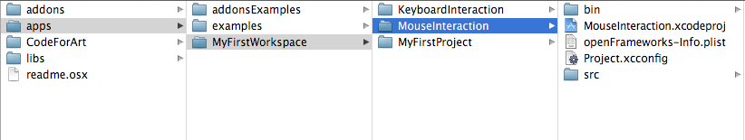
Let’s do the same thing with the mouse functions that we did with the key functions. Add the following to your project:
|
The x and y variables in the cout statement represent the location of the mouse click — very handy information to have.
Run the program and you should see something like this:
mouseMoved: 627, 500
mouseMoved: 619, 500
mouseMoved: 610, 500
...
mouseMoved: 426, 473
mouseMoved: 426, 476
mouseMoved: 427, 478
mousePressed: 426, 478 button: 0
mouseDragged: 427, 477 button: 0
...
mouseDragged: 548, 411 button: 0
mouseDragged: 547, 411 button: 0
mouseDragged: 546, 411 button: 0
mouseReleased: 546, 411 button: 0
mouseMoved: 544, 411
mouseMoved: 543, 411
mousePressed: 543, 411 button: 0
mouseDragged: 542, 411 button: 0
...
mouseDragged: 433, 396 button: 0
mouseDragged: 433, 377 button: 0
mouseReleased: 433, 377 button: 0
mouseMoved: 434, 370
mouseMoved: 433, 367There are a few important things to notice about this output. First, you will probably see a ton of "mouseMoved" messages. Indeed, this function is called whenever the mouse is moved so much as a single pixel, so be aware of this when adding code to mouseMoved. Next, notice that you see a "mousePressed" before every "mouseDragged" event, and then a bunch of "mouseDragged" messages, and then "mouseReleased" before it switches back to "mouseMoved".
6.1. Interacting With Graphics
So now we know how to make something happen when the user does any mouse business. But printing to the console is hardly the kind of interaction we want. When it comes to interacting with GUI applications, the mouse is used in a variety of ways: simple clicking, double-clicking, dragging, hovering, gestures, etc. One very basic interaction is "user clicks on something, something happens." Let’s see how we might accomplish this.
Suppose, for instance, that we wanted our trusty circle to expand whenever the user clicks on it. Let’s start by setting up a new project called MouseInteraction2. It will start out very similar to our MouseInteraction project:
|
As you can see, we have added a new variable called myCircleRadius. It should be clear that, if we want the circle to grow, all we have to do is increase myCircleRadius. The trick will be to determine when this should happen.
It’s clear that it has something to do with the mousePressed function that we just discovered above. We know that mousePressed is called every time the user clicks the mouse, so if we simply drop myCircleRadius++; into the mousePressed function, we would be half way there. Try this out.
|
You should find that the circle grows every time you click the mouse, regardless of whether or not your clicked inside the circle. But our challenge is to only grow the circle when the use clicks inside of it. So how might we go about this?
Well, luckily we are dealing with a circle, which will make it significantly easier. Because if we can determine the distance between the center of the circle and the location of the mouse click, we can compare this distance to the radius, and if it is less than the radius, then the click was inside the circle. Take a look at the diagrams:
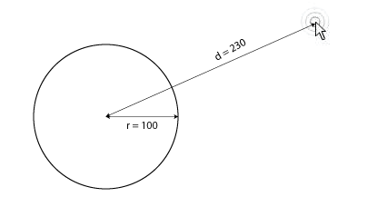
We know that the radius of the circle = 300, and we know that the mouse click is 230 pixels away from the center of the circle. So, was the mouse click inside the circle?
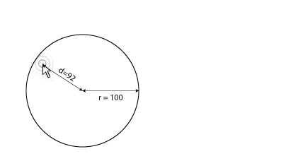
In this case, we know that the mouse click was 90 pixels from the center of the circle, so the click was clearly inside the circle.
So how do we measure this distance? openFrameworks provides a function called ofDist([x1], [y1], [x2], [y2]) that will save us from doing any basic trigonometry. All we have to do is give it our two coordinates.
|
The cout will allow us to check what kind of values we are getting from ofDist. Run your program now. Click around the screen and see what kind of values get printed in your console.
So the only thing left to do is compare myCircleRadius to distance, and we can do this using a simple if statement.
|
This code says "first calculate the distance between the center of the circle and the mouse click. Then compare distance to myCircleRadius. If (and only if) distance is LESS THAN myCircleRadius, increment myCircleRadius by 1."
Et voila! You are interacting with graphics!
7. Technical Topics
In the example above, we looked at one of the most basic control structures: the if statement. Control structures like the if statement allow you to alter the flow of your program based on criteria that you define. Control structures are not an openFrameworks "thing", but rather a feature of the C++ language. Let’s take a moment to review a few basics of the C++ language.
7.1. Variables
In the "Adding Movement" section, we introduced the idea of using variables to represent values that change over the course of your program. We used 2 integers, or *int*s - int myCircleX and int myCircleY - to represent the location of a circle. When you declare a variable as an int, you are telling the computer "I only intend to put whole numbers into this variable." This made sense in our example because we were moving a circle by a single pixel, so we didn’t need to worry about fractions.
But there will be times when you do need to have a variable that can hold a fraction, or something completely different, such as letters, words, even a location in memory. There are variable types for each of these situations. Here is a short list of some of them from cplusplus.com
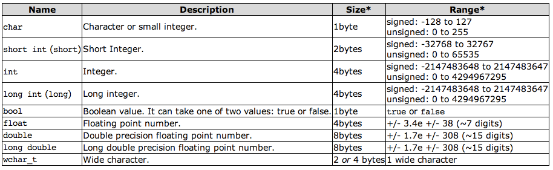
So, as you can see, our basic integer takes up 4 bytes in memory. This is a finite amount of memory, and therefore there is limited (but pretty huge!) range of values that it can hold: namely, -2,147,483,648 to 2,147,483,647. If you need to store higher (or lower) numbers, you’d have to use a long int, which (contrary to the diagram) can go up to 9,223,372,036,854,775,807 and down to -9,223,372,036,854,775,808.
It may be unintuitive to make such distinctions when dealing with variables. A number is a number, right? Why differentiate between a decimal number and a whole number? The reason has to do with how values are stored in your computer’s memory. Ultimately, by giving the programmer the responsibility of declaring what range and precision their variables need, the program can run that much more efficiently.
Tip |
Compile and run this program to see information about how your computer treats different kinds of variables.
|
There is one important kind of variable that is not covered in this chart: string. A string can hold a sequence of characters. … more to come …
7.2. Loops
Loops are perhaps one of the most important things to be comfortable with as a programmer. They are, arguably, the main advantage of using a computer: doing something over and over again very rapidly is the definition of what a computer is good at. There are a few different kinds of loops, and it is important to be familiar with all of them.
Suppose you want to a circle every 20 pixels across your window. One option would be to copy and paste ofCircle commands like this:
|
That would be over 50 lines of code - ugh. And what if you decided you wanted them every 30 pixels instead of every 20 pixels? You’d have to go back and edit each line of code. And what if the size of your window changed? This is clearly unacceptable. Consider this code:
|
In some ways, this is even worse. We’ve turned one line of code per circle into 2 lines of code per circle. However, there is one very important difference: in this case, the 2 lines are identical every time. We have "abstracted" the task — that is, we have taken out the specifics and made it into a more general form.
So now, all that’s left to do is to tell the computer to do those 2 lines of code a bunch of times instead of us pasting it in ourselves. This is where loops come in.
7.2.1. do…while loop
All loops basically take the same form:
-
Set up some initial values (initialization)
-
Execute the body of the loop
-
Decide whether to go back to step 2 or exit the loop
The simplest loop is the do/while loop. As the name suggests, this loop allows you to ask the computer to "do" something "while" a condition is met. Using a do/while loop, we can easily draw 51 circles
|
So what just happened? Let’s go through the code step by step as if we were the computer. I apologize that this is the most tedious thing you will ever read, but hopefully it will illustrate what is going on in the loop.
-
Initialize a variable called i and set it equal to 0
-
Initialize a variable called x and set it equal to 20
-
Draw a circle at (20, 30) with a radius of 10
-
Increment x by 20 (it now equals 40)
-
Increment i by 1 (it now equals 1)
-
Is 1 less than 51?
-
Yes! Go back to the beginning of the loop
-
-
Draw a circle at (40, 30) with a radius of 10
-
Increment x by 20 (it now equals 60)
-
Increment i by 1 (it now equals 2)
-
Is 2 less than 51?
-
Yes! Go back to the beginning of the loop
-
-
Draw a circle at (60, 30) with a radius of 10
-
Increment x by 20 (it now equals 80)
-
Increment i by 1 (it now equals 3)
-
Is 3 less than 51?
-
Yes! Go back to the beginning of the loop
-
-
[REPEAT 46 TIMES UNTIL i=50 and x=1000]
-
Draw a circle at (1000, 30) with a radius of 10
-
Increment x by 20 (it now equals 1020)
-
Increment i by 1 (it now equals 51)
-
Is 51 less than 51?
-
NO! Exit out of loop and continue on to whatever comes next
-
Tip |
We could actually make this even a bit more efficient and make the x variable to double duty like this:
This has the added advantage of being immune to changes in window size. Try making the window bigger and smaller — the circles will always be drawn to the end of the window. |
7.2.2. while loop
In a while loop, the while part is simply moved up to the top of the loop. So if we want to draw a string of circles with a while loop, it would look like this:
|
The only difference between a do…while loop and a while loop is that the the condition happens first, before the loop body runs. For example, suppose we edited our do…while loop like this:
|
Notice how we’ve changed the condition so that the circles will be drawn until x is less than the x position of the mouse. Run this code and see what happens. Notice, in particular, that there is always 1 circle on the screen regardless of how far to the left the mouse goes. Now transform that into a while loop:
|
Now, if you move your mouse beyond the left side of the window, nothing at all is drawn. This is because before the body of the loop is executed (namely the ofCircle draw command), the test is done. So if mouseX is less than x, no circles are drawn at all.
7.2.3. for loop
We’ve saved the best for last. The for loop is probably the one that you will use the most. This might be because it combines all 3 parts of a loop (initialization, condition, and incrementing) into one compact syntax. Let’s draw the same circles using a for loop:
|
The syntax of the for loop can be a little daunting at first, but let’s take it apart piece by piece. The first part is initialization: "int i=0;" Pretty straightforward: we now have an integer called i that we have set to 0. The next part is the condition: "i<51". In other words, we want the loop to continue so long as i is less than 51. And lastly, the increment: "i++". After every iteration of the loop, we will increment i by 1.
We saw each of these things in the other kind of loops. The only difference here is that they are all smashed into one line.
7.3. Arrays
Another strength of computers is that they are encyclopedic: that is, they can keep track of a huge number of things at a time. Suppose we want to draw six thousand moving particles? We know from the loop section that it is trivial to do something over and over again, but so far, we have only used loops to achieve a relatively consistent pattern. If we want do draw tons of particles, each with their own position, things get a little more complicated.

Figure 1. 50000 particles!
|
Tip |
Notice the use of ofRandom(). This function will return a random number. It takes 2 arguments: the minimum possible value and the maximum possible value. What I am saying in this code is "give me a number between 0 and the width of the screen." |
Technically this works, but we have only drawn 3 circles, and already the code is getting unwieldy. We want to draw 1000! We clearly have a bunch of variables that are used in very similar ways. Why not group, say, all of the x coordinates into a single set, and all of the y coordinates, etc.?
These sets are called arrays. Check out the following code:
|
As you can see, we’ve replaced int circle1x, int circle2x, and int circle3x with simply int circleX[3]. Now circleX is an "array" that can hold up to 3 integers, rather than just 1. Read a little further, and you will see that, in order to assign a value to one of the ints in the array, you use the square brackets, like this: circleX[0] = 50;
Down in the draw function, you can see that we use the same syntax to use the values that we have previously assigned to a particular slot in the array.
But this is still kind of a mess. One sign that you might not be utilizing loops as much as possible is if you see patterns in your code — that is, similar sequences of code over and over again. So let’s try to clean this up even more using some for loops.
|
Now, instead of putting hard-coded numbers between the square brackets, we use the i variable of our for loop.
7.3.1. #define
A wise person once said: the primary virtue of a programmer is laziness. Suppose you wanted to change the number of circles that appear on the screen from 3 to 500. Obviously, the first step would be to change circleX[3] to circleX[500], and likewise circleY and circleRad. Oh, but that’s not all. You’d still have to go through every "for" loop and change i<3 to i<50. That’s a lot of work!
It would be great if we could use a variable to keep track of how many items we have in our array! It might look something like this:
|
Unfortunately, this isn’t possible. You can’t use a variable to declare a variable.
Instead, we will use a new thing called a #define (pronounced: "pound define"). Take a look at this:
|
At the very top, notice the line "#define NUM_CIRCLES 500". This isn’t technically a line of C++ code, but rather a message to your compiler. It tells the compiler "before you start compiling code, anywhere you see NUM_CIRCLES, replace it with 500". That’s it! A #define is one of a couple messages that you can send to the compiler (or, more accurately, the preprocessor), known more broadly as preprocessor directives. We will talk more about them at a later date., but for now, all you need to know is that #define is a very simple find/replace procedure.
7.4. Functions
In the examples above you had blocks of code enclosed in curly braces. To compose some more abstract functionality you also group instructions and call this group my a name. Look at the following example:
|
Here you see the definition of a function. A function is a named group of instruction which might take some input in the form of variables and might return some output. It might also be called a subroutine, depending on the context. Line 1 shows what is called the signature of a function. It first names the type of the data returned. Void means no data will be returned, int means a whole number gets returned, and so on. The return data type is followed by the name of the function ("drawStar") and finally a list of arguments. The list of arguments first states the data type (e.g. "int") and then a variable name (e.g. "xpos"). The argument variables are visible by their name inside the function body (aka. the curly braces), but not outside. The following code should make these concepts more clear.
|
The function "add2" takes an integer as an argument ("number") and adds two to it. This value gets returned by the "return" statement. A "void" function (usually) does not have a return statement. The variable "number" can be seen and accessed inside the "add2" function, but not the inside the "other" function. When calling the "add2" function, the value of "ivalue" (4) gets copied over into "number". Then "add2" is executed and the return value (4 + 2 = 6) calculated. This is then passed back add assigned to "ivalue".
There are other noteworthy things about the "drawStar" function. As you can see in the source, a function can have its own variables (like "useInner"), which only exist inside the function body. A function can call other functions, as demonstrated with "ofBeginShape()", "ofDegToRad()" and so on. The line 7 is an abbreviated if statement. A more recognizable way to write it is:
|
This abbreviated syntax might be useful if each alternative consists of only one statement to be executed, but is also easy to overlook when trying to find bugs (programming errors) in a program. The more verbose version is easier to spot and understand. It also is easier to extend if needed.
All the concepts introduced should give you the basic tools to study and understand the example code provided. We covered a lot of ground, so go and poke at the other examples!